الأرقام متفرقة
ملف من كل جهة بصيغة مختلفة، ومكتب البرنامج يجمعها وينسقها يدويًا.
منصة متابعة المبادرات
من تحديث مدير المبادرة إلى قرار القيادة، لحظة بلحظة.
← أو المسافة للتالي
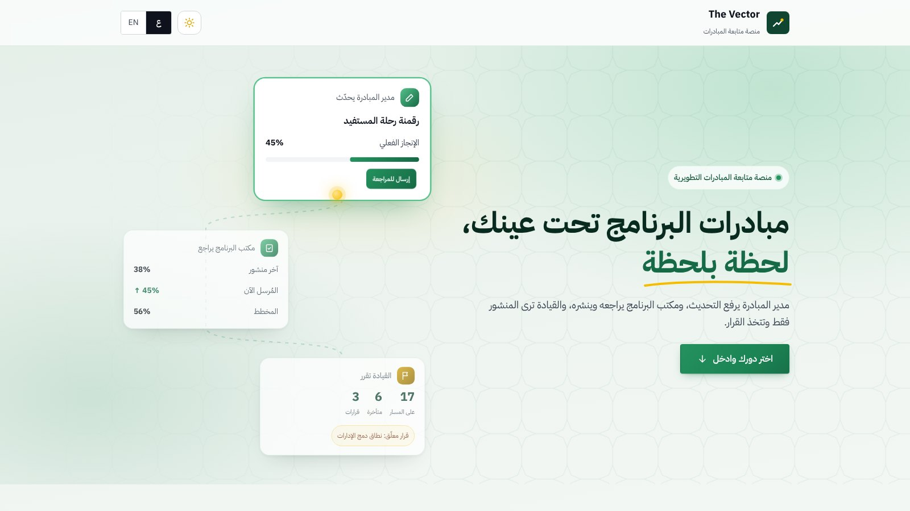
المشكلة
في كثير من الجهات تُتابع المبادرات بملفات Excel وعروض ورسائل، ويتكرر المشهد نفسه كل شهر:
ملف من كل جهة بصيغة مختلفة، ومكتب البرنامج يجمعها وينسقها يدويًا.
الرقم يصل القيادة كما كتبه صاحبه، بلا مقارنة بالشهر الماضي.
الصورة تصل بعد أسابيع، فيظهر التأخر فيها بعد أن صار واقعًا.
ما تحتاجه المبادرة من القيادة يبقى في محضر أو رسالة، ولا يتابعه أحد.
والنتيجة: وقت يضيع في الجمع، وقرارات تتأخر، ومبادرات تتعثر دون أن يراها أحد في وقتها.
الحل
اليوممع The Vector
الفكرة
لا يصل القيادة إلا ما راجعه مكتب البرنامج ونشره، فكل رقم في الطبقة الذكية رقم معتمد.
يحدّث مبادرته متى ما تغيّر شيء: النسب، ما تم، القادم، والعوائق.
يراجع كل تحديث، ثم ينشره أو يُرجعه بملاحظة.
بوابة النشريقرأ الخلاصة والتوقعات، ويقرر فيما ينتظره.
الرحلة
كل الأدوار
البداية
صفحة دخول بهوية المنصة. بعد الدخول يفتح كل مستخدم على الصفحة التي تخصه.
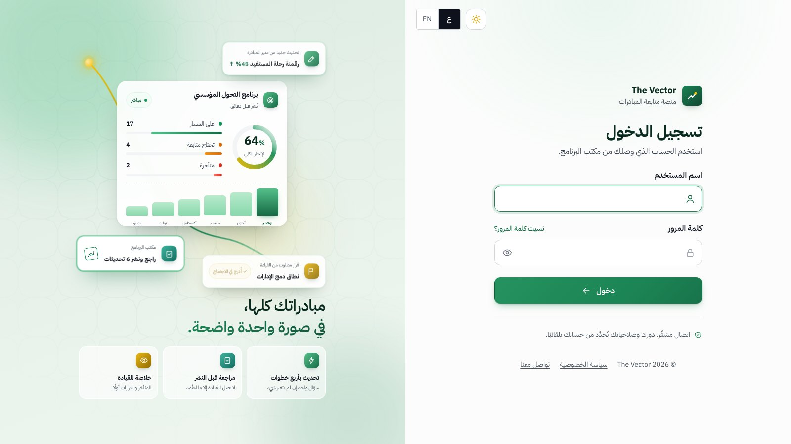
الخطوة 1
مكتب البرنامج
الرئيسية ترتب المهام: ما ينتظر المراجعة، والبطاقات التي لم تُحدَّث منذ أسبوعين، والقرارات المعلّقة.
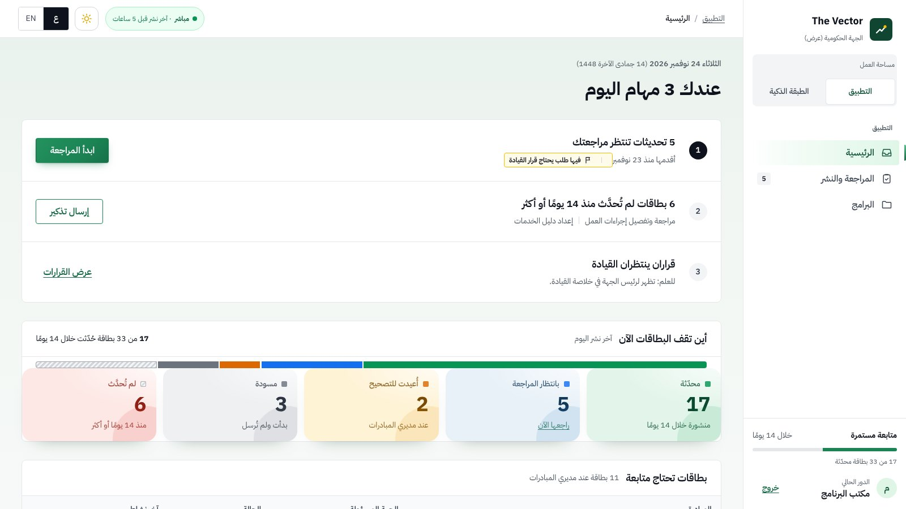
الخطوة 1
إعداد البرنامج
خطوة بخطوة أو من Excel، ولكل مبادرة جهتها ومديرها.
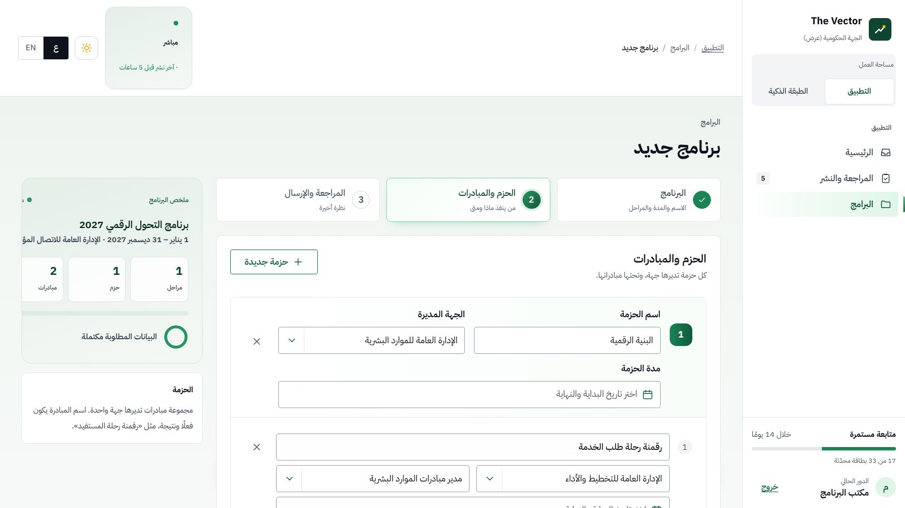
الخطوة 2
الاعتماد
يعتمده زميل آخر. عند الاعتماد تُنشأ بطاقة متابعة لكل مبادرة، ويبدأ التحديث من اللحظة نفسها.
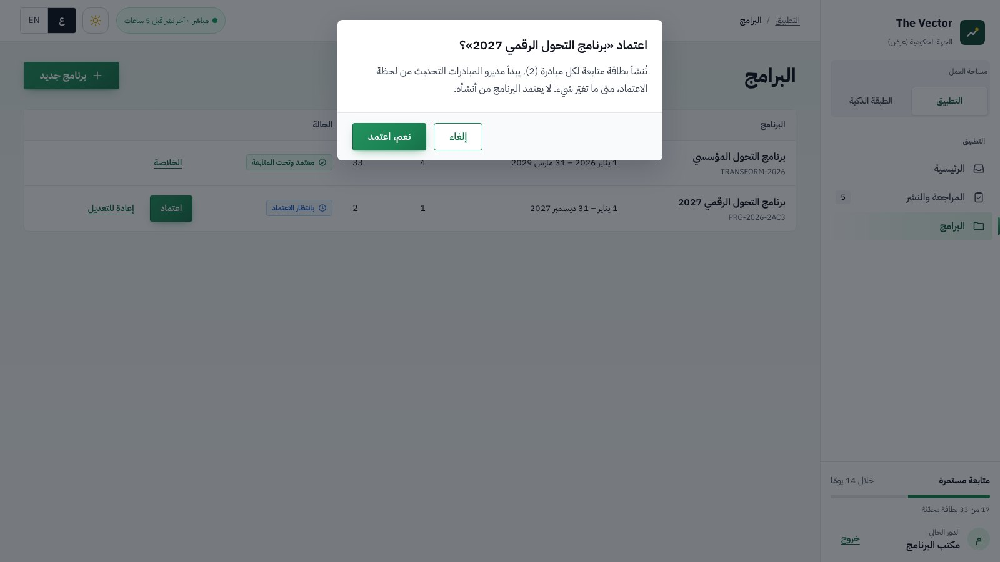
الخطوة 3
مدير المبادرة
ما أُعيد له بملاحظة أولًا، ثم المسودات، ثم ما لم يُحدَّث منذ أسبوعين. وكل مبادرة يقدر يحدّثها في أي وقت.
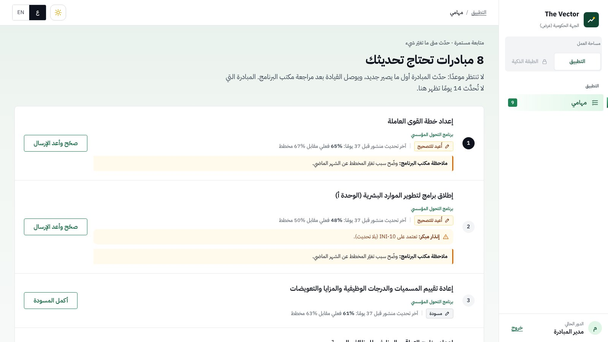
الخطوة 3
التحديث
يكتب المدير الإنجاز فيرى الانحراف والحالة فورًا. وإذا احتاج قرارًا كتبه بصيغة تقرؤها القيادة.
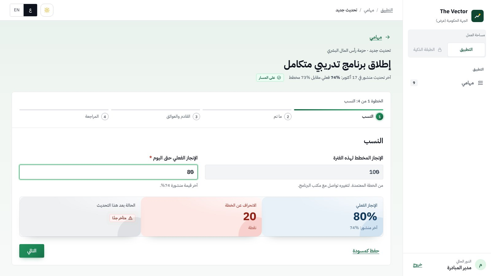
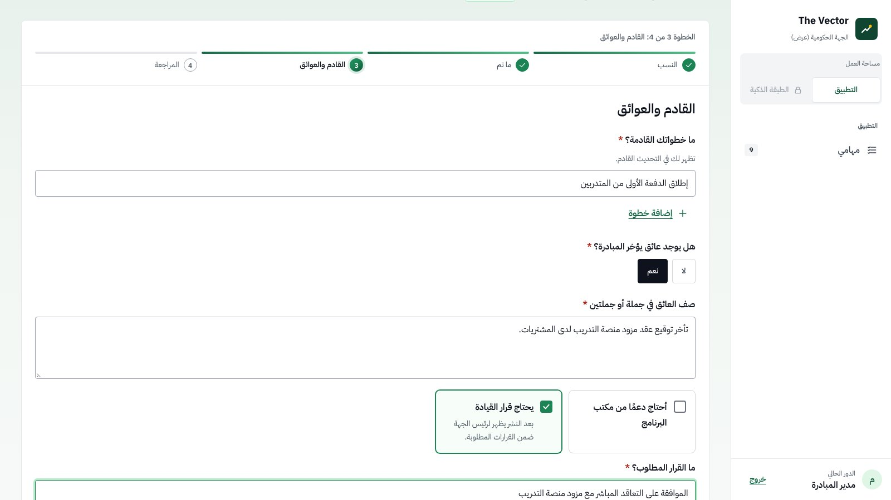
الخطوات 4 و5
المراجعة والنشر
يقارن التحديث بآخر رقم منشور، ويقرأ الخطوات والعوائق، ثم ينشر أو يُرجع بملاحظة.
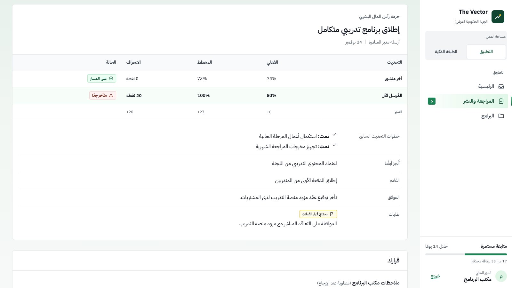
الطبقة الذكية
من هنا تبدأ الشاشات التي يقرأ منها رئيس الجهة.
الخطوة 6
رئيس الجهة
أول جملة تقول ما يحتاج قراره، ثم الأرقام، ثم القرارات وأين التأخر. والصفحة تتحدّث بنفسها لحظة نشر أي تحديث.
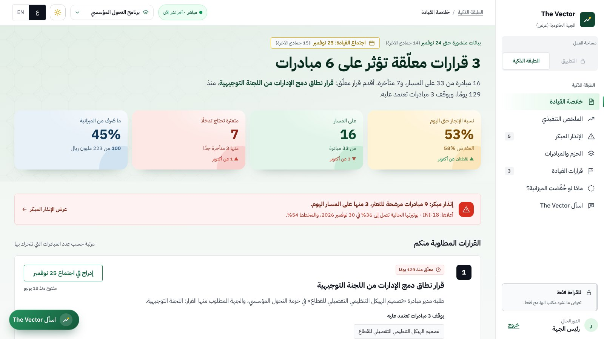
الخطوة 6
قرارات القيادة
مرتبة حسب أثرها: كم مبادرة تتوقف عليها ومنذ متى.
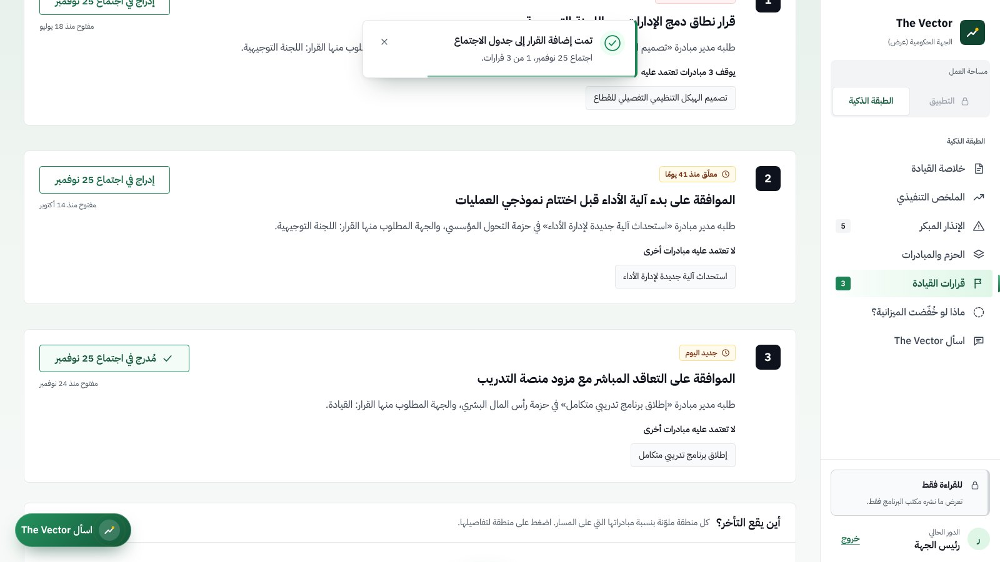
للقيادة
الملخص التنفيذي
بوتيرة آخر ثلاثة أشهر نحسب التوقع ومداه، لكل حزمة وللبرنامج كله.
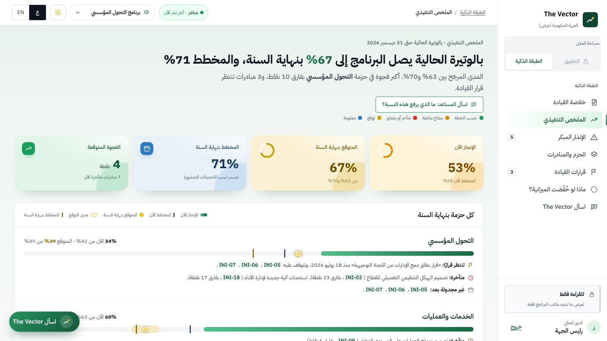
للقيادة
صفحة المبادرة
الإنجاز والمتوقع والموعد والمصروف والوتيرة، وما تحتاجه الآن مرتبًا حسب أثره.
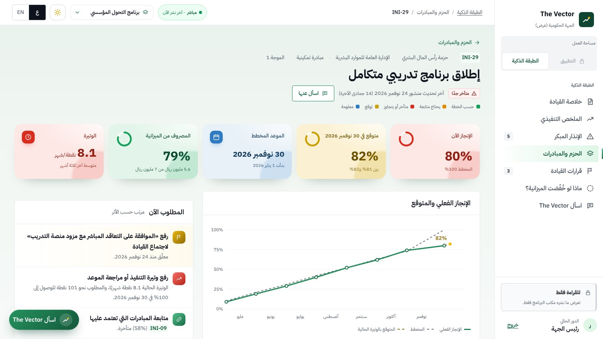
للقيادة
محاكاة الميزانية
اختر نسبة الخفض وما تحميه، فتقترح المحاكاة ما يستمر وما يُقلّص وما يُؤجّل.
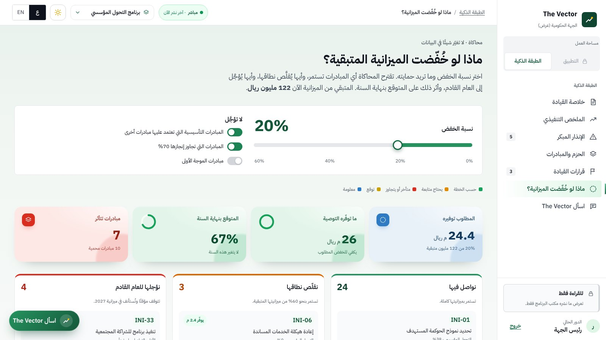
للقيادة
الإنذار المبكر
بعد كل نشر تُقرأ كل مبادرة بست إشارات: هل تلحق خطتها بوتيرتها الحالية، هل تتباطأ، هل يسبق الصرف الإنجاز، هل تنتظر مبادرة متعثرة أو قرارًا طال، وهل تحديثاتها منتظمة.
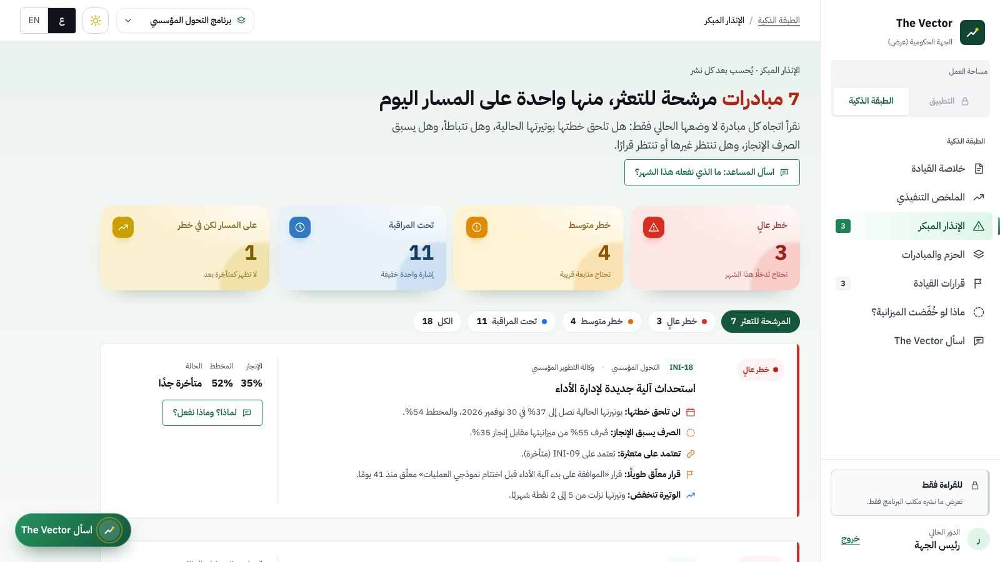
الذكاء الاصطناعي
اسأل The Vector
المساعد لا يرى الجداول. يقرأ من نفس الحسابات التي تعرضها الشاشات، فأي رقم يقوله تجده في صفحته.
البرنامج عند 53% مقابل 58% مخطط، وبالوتيرة الحالية يصل إلى نحو 67% بنهاية السنة بدلًا من 72%.
السبب
7 مبادرات متأخرة، منها 3 متأخرة جدًا.
أكبر فجوة في حزمة التحول المؤسسي.
المقترح
البت في 3 قرارات معلّقة لدى القيادة.
من: الأرقام الرئيسية والمناطق، توقع نهاية السنة لكل حزمة
الذكاء الاصطناعي
حاضر في كل صفحة
لا تحتاج تعرف كيف تسأل. في الملخص وصفحة المبادرة زر يفتح المساعد بسؤال عن نفس الأرقام التي أمامك.
الذكاء الاصطناعي
بُني ليساعد القيادة على فهم الأرقام، لا ليقرر بدلها.
يرى ما نشره مكتب البرنامج فقط، ولا يستطيع تغيير أي رقم أو حالة.
ست أدوات قراءة هي نفس حسابات الصفحات، فلا رقم يخالف ما تعرضه المنصة.
من سأل، ومتى، وماذا سأل، وأي أدوات استخدم، دون حفظ الأرقام التي قرأها.
Claude على Amazon Bedrock في نفس حساب AWS، ولا تُستخدم البيانات لتدريب أي نموذج.
في كل مكان
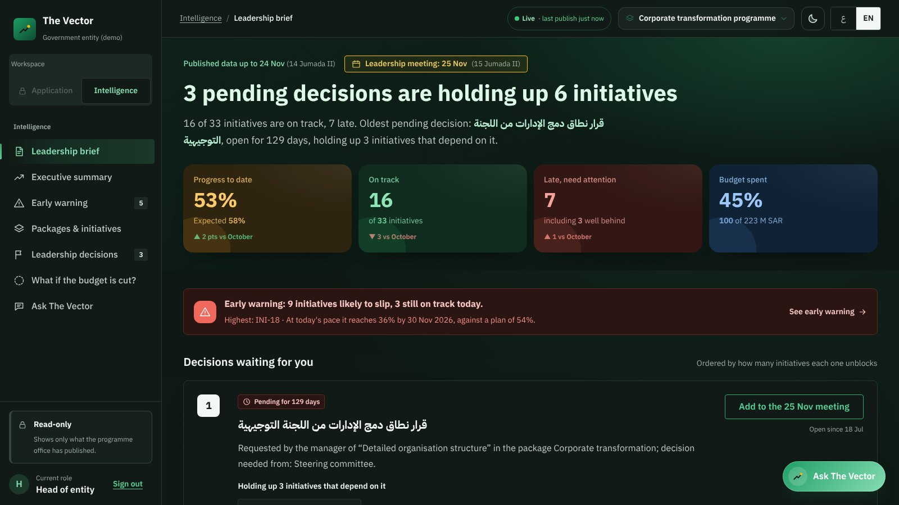
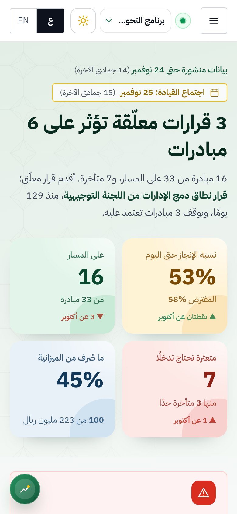
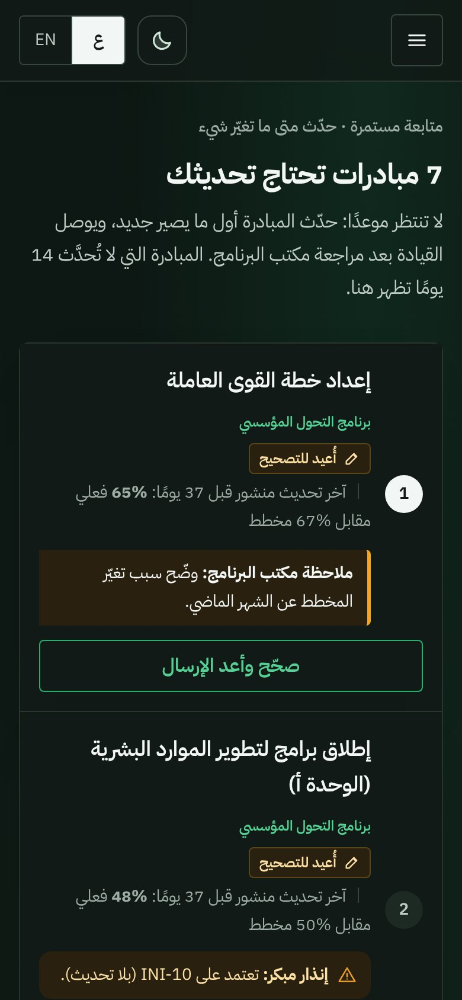
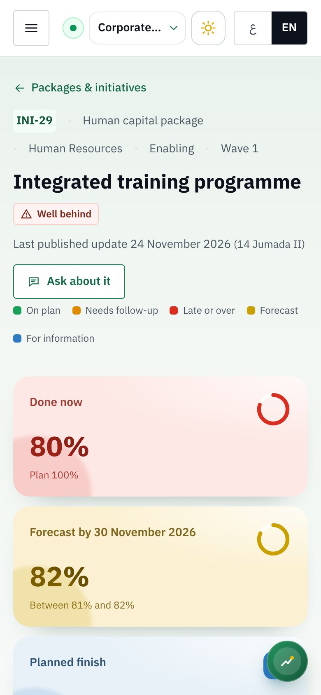
القيمة
الأرقام تصل القيادة يوم نشرها، لا بعد أسابيع من جمعها.
ما يقدمه The Vector
من إعداد البرنامج إلى قرار القيادة، في مكان واحد.
الثقة
Amazon Cognito بصفحة دخول خاصة بالمنصة، واتصال مشفّر
من يُنشئ لا يعتمد، ومن يُدخل لا يراجع
كل إجراء وكل سؤال للمساعد مسجّل
خادم وقاعدة بيانات وذكاء اصطناعي في حساب واحد
الخطوات القادمة